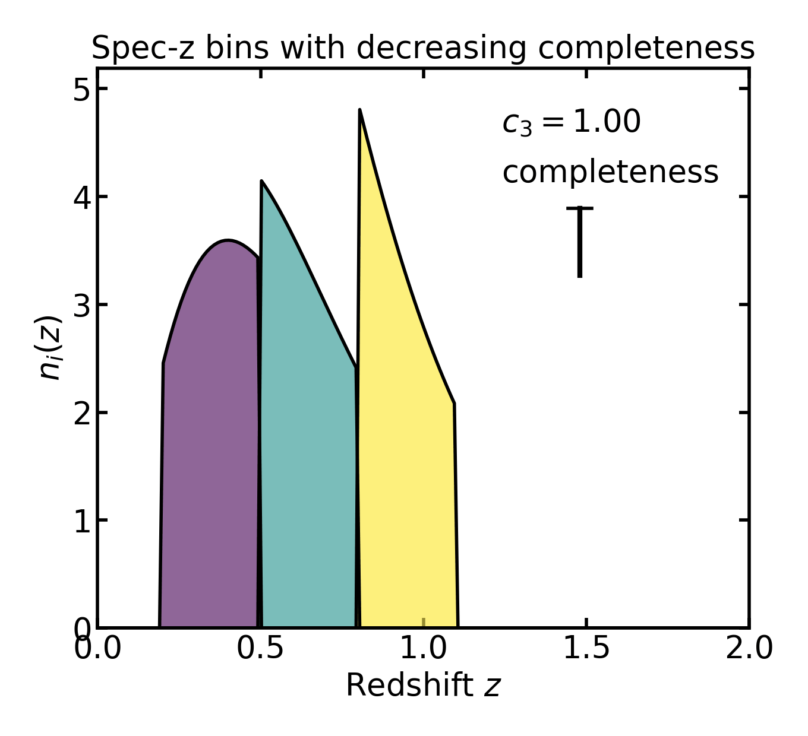
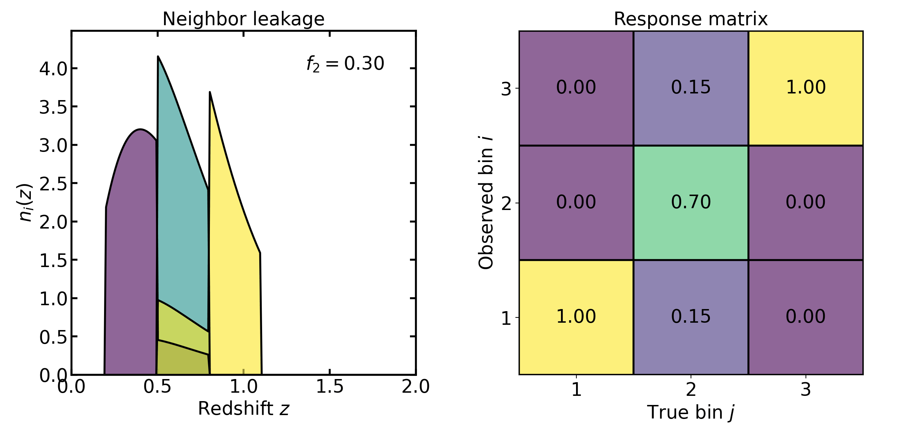

Spectroscopic-redshift uncertainties#
Spectroscopic-redshift uncertainties#
In spectroscopic-redshift tomography, bins are defined directly in true redshift. In the ideal case this corresponds to perfectly sharp bin edges. Real surveys, however, may introduce incompleteness, misclassification, or measurement scatter, which can be modeled through additional response terms.
In the simplest case, a tomographic bin is a top-hat selection over a true redshift interval.
For true redshift edges \([z_j, z_{j+1}]\), the true-bin selection window is
where
\(S_j(z)\) is the true redshift selection function for true bin \(j\),
\(c_j\) is the completeness factor for bin \(j\),
\(\mathbf{1}_{[z_j, z_{j+1})}(z)\) is the indicator function, equal to \(1\) when \(z \in [z_j, z_{j+1})\) and \(0\) otherwise,
\(z_j\) and \(z_{j+1}\) are the lower and upper edges of true bin \(j\).
API mapping:
\(c_j\) :
completeness
The corresponding true-bin distribution is
where
\(n_j^{\mathrm{true}}(z)\) is the true-bin distribution for bin \(j\),
\(n(z)\) is the parent distribution.
In the absence of any response effects, the observed and true bins coincide:
where
\(n_i^{\mathrm{obs}}(z)\) is the observed-bin distribution,
\(n_i^{\mathrm{true}}(z)\) is the true-bin distribution.
This is the deterministic idealization of spectroscopic tomography.
Completeness#
The simplest spec-z uncertainty ingredient is the completeness factor:
where
\(c_j=1\) corresponds to full completeness in bin \(j\),
\(c_j<1\) reduces the pre-normalization population in that bin.
This parameter represents objects that should belong to the bin but are missing from the sample, for example due to survey selection effects, failed spectroscopic measurements, or masking.
Because completeness acts multiplicatively, it changes bin populations before optional normalization. If bins are later normalized individually, the shape of a nonempty bin is preserved while its total population decreases.
In other words, completeness does not move galaxies between bins. It simply removes a fraction of galaxies from the affected bin.
The animation below illustrates this effect: as completeness decreases, the height of the affected bin decreases while the other bins remain unchanged.
{kind=link}

API mapping:
\(c_j\) :
completeness
Observed-bin response#
Although spec-z bins are defined in true redshift, Binny also supports response effects that map true bins into observed bins. This is useful for modeling bin reassignment, imperfect classification, or leakage between bins.
The observed-bin distributions are constructed from the true-bin distributions through a response matrix \(M\):
where
\(M_{ij}\) is the probability that an object in true bin \(j\) appears in observed bin \(i\),
\(i_{\mathrm{obs}}\) denotes the observed-bin index,
\(j_{\mathrm{true}}\) denotes the true-bin index.
The response matrix must satisfy the column-stochastic condition
which simply means that every galaxy must end up in some observed bin.
The observed-bin distribution is then
where
\(n_i^{\mathrm{obs}}(z)\) is the observed-bin distribution,
\(n_j^{\mathrm{true}}(z)\) is the true-bin distribution,
\(M_{ij}\) weights how much true bin \(j\) contributes to observed bin \(i\).
The response matrix therefore determines how the true-bin populations are distributed across the observed bins. Instead of each true bin contributing only to its corresponding observed bin, part of its population may be redistributed to other bins.
Catastrophic reassignment#
One supported response effect is catastrophic bin reassignment. For each true bin \(j\), a fraction \(f_j\) is removed from the diagonal and redistributed to other bins.
The response can be written schematically as
where
\(M_{:j}\) denotes column \(j\) of the response matrix,
\(f_j\) is the catastrophic reassignment fraction for true bin \(j\),
\(e_j\) is the diagonal basis vector for bin \(j\),
\(q_j\) is the redistribution pattern over other bins,
\(1-f_j\) is the fraction that remains in the original bin.
In practice this parameter represents objects that are assigned to the wrong tomographic bin. Increasing \(f_j\) moves a larger fraction of galaxies from their true bin into other bins.
API mapping:
\(f_j\) :
catastrophic_frac
Uniform leakage#
With leakage_model="uniform", the catastrophic fraction is distributed
equally among all other bins.
This represents situations where misclassified galaxies are scattered randomly across all bins, with no preference for nearby bins.
Neighbor leakage#
With leakage_model="neighbor", the catastrophic fraction is distributed to
adjacent bins only. Interior bins leak equally to the left and right
neighbors, while edge bins leak to their single available neighbor.
This is a simple model for local misclassification, where galaxies are most likely to be assigned to bins that are close in redshift.
Gaussian leakage in bin index#
With leakage_model="gaussian", the catastrophic fraction is redistributed
according to a Gaussian kernel in bin-index space, with width
\(\lambda\):
where
\(q_j(k)\) is the leakage weight from true bin \(j\) into bin \(k\),
\(k\) is the receiving bin index,
\(j\) is the source true-bin index,
\(\lambda\) is the Gaussian leakage width in bin-index space.
API mapping:
\(\lambda\) :
leakage_sigma
This allows leakage to remain concentrated near the original bin while still reaching more distant bins with suppressed weight.
{kind=link}

The animation above shows the neighbor-leakage case. As the catastrophic fraction \(f_2\) increases, a larger fraction of galaxies from the second true bin is reassigned to its neighboring bins. The left panel shows the resulting observed-bin distributions, while the matrix on the right shows the corresponding response matrix.
Explicit response matrices#
Instead of constructing the catastrophic response from the built-in leakage models, the user may provide an explicit response matrix directly.
API mapping:
\(M\) :
response_matrix
When supplied, this matrix overrides the modeled catastrophic reassignment and is validated to ensure that it has the correct shape and is column-stochastic.
This is useful when the response is known from an external calibration, a mock catalog, or a survey pipeline rather than a simple parametric model.
Spectroscopic measurement scatter#
Binny also supports an additional Gaussian measurement-scatter response at the spec-z level. This differs from catastrophic reassignment: instead of moving a discrete fraction of objects between bins, it models a continuous measurement uncertainty in redshift.
A Gaussian spectroscopic measurement model may be written as
where
\(\hat{z}\) is the measured spectroscopic redshift,
\(z\) is the true redshift,
\(\sigma_{\mathrm{spec}}(z)\) is the spectroscopic measurement scatter.
In the implemented parametric form,
where
\(\sigma_0\) is a constant scatter floor,
\(\sigma_1\) is the coefficient of the redshift-dependent scatter term.
At fixed true redshift, the probability of landing in observed bin \(i\) is
where
\(P(i_{\mathrm{obs}} \mid z)\) is the probability of assigning a galaxy at true redshift \(z\) to observed spectroscopic bin \(i\),
\(p(\hat{z}\mid z)\) is the conditional density of measured redshift at fixed true redshift,
\(z_i\) and \(z_{i+1}\) are the lower and upper edges of observed bin \(i\),
\(\mathrm{d}\hat{z}\) is the integration measure in measured redshift.
The bin-level response matrix is then obtained by averaging this probability across the true redshift support of each bin:
where
\(M^{\mathrm{scatter}}_{ij}\) is the scatter-induced response from true bin \(j\) to observed bin \(i\),
\(\langle \cdots \rangle_{z \in j}\) denotes an average over the true redshift support of bin \(j\).
If catastrophic leakage is also present, the total response becomes
where
\(M^{\mathrm{total}}\) is the total response matrix,
\(M^{\mathrm{scatter}}\) is the measurement-scatter response matrix,
\(M^{\mathrm{cat}}\) is the catastrophic-leakage response matrix.
The observed bins are then obtained using \(M^{\mathrm{total}}\) in place of \(M\).

API mapping:
\(\sigma_0\) :
sigma0\(\sigma_1\) :
sigma1
Scatter parameterizations#
Two equivalent ways of specifying the spectroscopic scatter are supported.
Explicit per-bin scatter#
The user may provide \(\sigma_{\mathrm{spec}}\) directly as a scalar or per-bin sequence.
API mapping:
\(\sigma_{\mathrm{spec}}\) :
specz_scatter
This sets the Gaussian scatter width associated with each true bin directly.
Parametric scatter model#
Alternatively, Binny implements the redshift-dependent model
where
\(\sigma_{\mathrm{spec}}(z)\) is the measurement scatter,
\(\sigma_0\) is the constant floor,
\(\sigma_1\) controls redshift growth.
API mapping:
\(\sigma_0\) :
sigma0\(\sigma_1\) :
sigma1
This provides a simple baseline model with both constant and redshift-dependent contributions.
Implemented spec-z parameters#
The following spectroscopic parameters are implemented in Binny:
\(c_j\) :
completeness— multiplicative true-bin completeness\(f_j\) :
catastrophic_frac— fraction reassigned away from true bin \(j\)leakage_model— prescription for redistributing catastrophic leakage\(\lambda\) :
leakage_sigma— width for Gaussian leakage in bin-index space\(M\) :
response_matrix— explicit user-supplied bin-response matrix\(\sigma_{\mathrm{spec}}\) :
specz_scatter— direct Gaussian scatter amplitude\(\sigma_0\) :
sigma0— constant floor in the parametric scatter model\(\sigma_1\) :
sigma1— redshift-dependent coefficient in the parametric scatter model
These components can be used independently or in combination, depending on the level of realism needed.
No-uncertainty limit#
In the simplest spectroscopic limit,
\(c_j = 1\) for all bins,
\(f_j = 0\) for all bins,
\(\sigma_{\mathrm{spec}} = 0\), or equivalently \(\sigma_0 = \sigma_1 = 0\),
the response reduces to the identity and each tomographic bin is simply a top-hat true redshift slice of the parent distribution.
This is the idealized spectroscopic case with perfectly sharp binning and no observed-bin mixing.
Normalization and interpretation#
For both photo-z and spec-z builders, Binny distinguishes between the parent distribution, raw bin weights, and normalized returned bins.
Parent normalization#
If normalize_input=True, the parent distribution \(n(z)\) is first
normalized to integrate to unity over the supplied redshift grid:
In this equation,
\(n(z)\) is the parent redshift distribution,
\(\mathrm{d}z\) is the integration measure in true redshift.
This ensures that bin construction begins from a properly normalized parent probability density.
Bin normalization#
If normalize_bins=True, each individual tomographic bin is normalized after
construction. The normalized bin may then be written as
where
\(\tilde{n}_i(z)\) is the normalized version of bin \(i\),
\(n_i(z)\) is the unnormalized bin distribution,
\(z'\) is a dummy integration variable,
\(\mathrm{d}z'\) is the integration measure with respect to \(z'\).
This makes the returned bins easy to compare as redshift distributions, but it also removes their relative population amplitudes from the returned arrays.
As a result:
the returned bins encode shape;
the metadata encode population fractions.
This separation is often useful in cosmological workflows, where one may want normalized kernel shapes together with external number-density information or internally stored fractional weights.